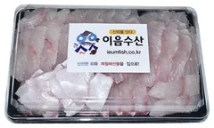

이름에 든 자음·모음 가시만, 맨 위부터 쏙!
이 생선 이름의 가시만,맨 위에서부터 빼세요
생선에 자음·모음 가시가 겹겹이 박혀 있어요. 아래 그릇에 흐리게 보이는 이름의 자음·모음만 골라 빼면 돼요. 다른 가시에 눌린 가시를 집거나, 이름에 없는 가시를 집으면 실수예요.
생선마다 시간 제한이 있어요. 뒤로 갈수록 가짜 가시는 많아지고 시간은 줄어요. 시간 안에 못 바르면 그 생선은 0점!
